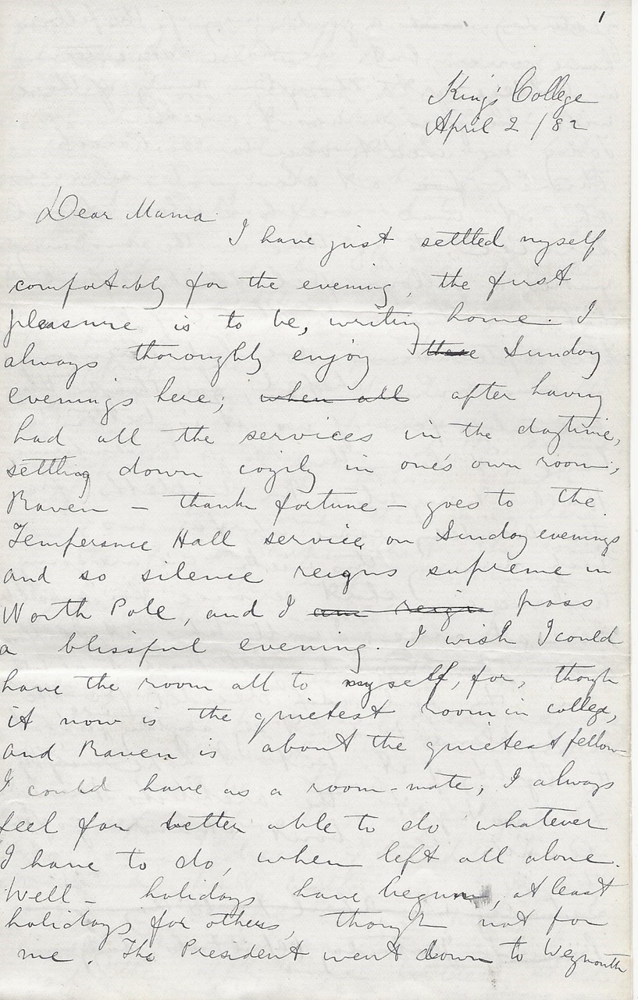

King’s College
April 2 / 82
Dear Mama
I have just settled myself comfortably for the evening, the first pleasure is to be, writing home. I always thoroughly enjoy Sunday evenings here; after having all the services in the daytime, settling down cozily in one’s own room; Raven — thank fortune — goes to the Temperance Hall service on Sunday evenings and so silence reigns supreme in North Pole, and I pass a blissful evening. I wish I could have the room all to myself, for, though it now is the quietest room in college, and Raven is about the quietest fellow I could have as a room-mate, I always feel far better able to do whatever it is I have to do, when left all alone.
Well — holidays have begun, at least holidays for others, though not for me. The President went down to Weymouth yesterday, a good many of the fellows have gone, but we have seventeen in college yet, though many of those will be going next week. Today we went over to the Parish Church at eleven to service, oh, it was such a slow dismal service; to go there in the morning makes a fellow feel so thankful that we have a chapel of our own. This afternoon we had evensong in our own chapel, for though there are only a few of us, it is better to have it here, than to go to Temperance Hall at night. Mr. Willetts from the Academy came up, for us. Each morning this week we are going to have a short service for ourselves here, at nine; I will take it, I suppose. I saw Mr. Maynard yesterday, and he told me that they had decided for the Digby plans; I did not say anything more about the legality of it, but I hope — if they have not yet the architect’s permission he will hear about it, and go for them.
Yesterday (April Fool’s Day) a fine thing was got off on Farish; about lunch time he received a note and a basket from Gerrish Hall, in the basket were a lot of lovely pancakes, buttered, sugared, and hot, tempting enough to make his mouth water; looking forward to a good meal, he invited a friend in, these two joined by Corwie, Farish’s roommate, settled themselves around the pancakes; Corwie proceeded to appropriate the first one to himself, he bit and bit, but evidently the cake was a peculiar one, each of the others found the same difficulty with theirs, each tried another one, then another, in the fond hope that the lower they got in the heap, the more chance there would be of a good honest pancake, but alas, it was the first of April and those pancakes, every one, were at unity in themselves, and would not be torn asunder; the recipe for this style of cake has since been found to be, put batter in a frying pan, on it place a piece of woolly material any size, and then apply more batter, the whole will be found to make a very nice looking cake.
Why did you not tell me L. Watson was home? Now I must start out on the all-important news, which I have been keeping back until these little things were settled down. Within the last two or three days, things have been boiling in King’s College, the whole working power of the university is seething. On Wednesday and Thursday and Friday, there were two or three board meetings a day, over something. On Friday I saw Mr. Maynard on my way to church and he asked me if I had heard that Dr. Spencer and DeFormity had got dismissals from the governors, as there was not enough money to pay their salaries; I was horror-struck, of course I told every student I saw, and the news was soon all around.
After getting back to college, Parlee who lives with DeFormity came into my room, and I began talking to him about this, I at once saw he knew more about it, and did not want to say much but after a while, he took us into his confidence, and told us the whole affair, saying it soon would be out, but not to mention it (he had been acting as an illegible ensis for the board). While we were at dinner, a note was brought in to me from him, saying DeFormity wanted me to get up a student meeting that evening and tell them the whole affair and see what steps they would take. So after dinner I gave notice for a meeting at half past seven, and then went to DeFormity; who told me all about it, and said what he thought we should do; he said, he wanted to lay the matter before us at first for we were so interested in it, but that the other professors thought better to keep it secret as long as possible; it was out about their dismissal now and so he would let the whole affair come out.
You are wondering what it is, I expect; at a meeting of Governors of the College in February there were four beside the Bishop present, (now there are twelve governors); the Bishop is President of the Board of Governors, and runs things his own way all the time; at this meeting he made a great fuss over there not being enough money to carry the college on, and that someone would have to be discharged, the chemistry chair was founded last, so it could be the first, modern languages the next, three of the Governors were willing to leave the matter to the Bishop’s discretion — generous creatures — and one was not willing, things went on, the Bishop decided to dismiss the two professors, and a few days ago they received dismissals from him in the name of the governors; now there is a statute of university which says, there have to be nine governors at any meeting before a professor can be dismissed, but that dismissal it says must be for bad conduct or some fault; now here you see are three wrong points in the proceedings.
Another statute says there must be at least four professors; these two being dismissed leave only three, so by their own laws King’s ceases to be a University when these two chairs are given up. The Chemistry chair is specially provided for in an endowment fund of $24,000 raised when the nominations were granted, and if it is given up, all those who own nominations (each nomination representing $400 of the fund) can claim that amount from the college, so all that money might have to be given up; then all that is promised on the present endowment fund will not be given, if the college ceases to be a university, and not another cent will be raised; so King’s College will go to ruin, and all by the Bishop with two or three wooden-headed old governors. Everyone was boiling about it.
When the professors got their dismissals, they consulted the others of course; they all agreed that, if the two went the College was gone up and would be turned into a mere Divinity school, in six months most likely Profs. Wilson and Butler would also be dismissed and the Buff would be left to teach Divinity; Spencer felt confident that the dismissals were illegal and was determined to withstand his, DeFormity also, and the others were of the same opinion; the three remaining ones said they would make up the salary of one of the dismissed ones out of their own salaries, and he could hang on for a year, that would be DeFormity, (doesn’t that look like men illegible) and Spencer would stand at bay; and King’s should not go down; they saw that the Bishop was the man to be fought, and they decided to fight him to the teeth, the Buff, was on the fence a little being scared I think, but the others made him cooperate, they drew up a strong protest to the governors, showing that the action taken by them is illegal (this statement was on good legal advice) and demanding it to be cancelled.
Spencer entered office at Xmas time DeFormity at October, so if they were merely ordinary officers they could not be dismissed before then. There is a law too, that those holding such employment as they, cannot be dismissed until half the capital of the society etc. has been consumed in paying their salary; this is of course where no offence has been committed. Well at our meeting the fellows of course were mad about what had been done, and the whole affair was discussed. It is a great injustice to us who are here, to have dismissed these professors, for we are in the midst of our course, and have a legal right to finish our course under the present position of the college, and receive our degree if they fail to let us try for our degree, we can sue them for large damages.
By their own law they cannot give degrees after June, and consequently the fellows will nearly all be duped, and have lost one, two or three years (in regard to having a degree of course) and even if they did grant degrees, with three professors on the staff, what a ridiculous thing it would be, fancy what the outside world would say to a degree at King’s then. Then another point is all those who have taken degrees here will be put in a similar position, their degrees will be like the representatives of rotten boroughs.
After it had been discussed a committee was appointed to draw up a protest to the governors, in as strong language as possible; Frith, Hannington Taylor, Parlee and myself were the ones. We were exhorted to put on all the face we could without the cheek. At something before eight we began our work in Frith’s room, and at two o’clock we were finished; it was necessary to have it finished that night as many of the fellows were going away in the morning. It is pretty strong, and will show the governors that professors and students are going to work before King’s is knocked down.
I believe if the Bishop had appeared around here on Friday night, he would have had a hard time of it; all were abusing him, even his nearest and dearest; Taylor a divinity student sent here by the Bishop spoke at the meeting of ecclesiastical airs in high places quite boldly. Part of the time when we were over the protest, I gave my attention to getting up a caricature; the Bishop trying to push the College over with the board of governors, the students from the front and from the windows firing assegais at him, and otherwise defending the building, with the professors at the back propping it with fence poles etc. some of them want it to be sent to Grip; I wish Bob was here to do a good one, it is a great subject.
Spencer was in Halifax when we had our meeting, but he came back last night, and had us (the committee) to meet him, and talk over the affair, he has sworn deadly fight with the bishop, and he will have lots of backing up. Now the truth seems to be that the Bishop wants to turn this into a mere divinity school, to take all the money there is, and give it to Divinity professors. He is not weighing illegible on the Endowment fund, and makes the present lack of money the excuse. Wow if they went to work in the business way, they could raise the money. Prof. Wilson and Spencer have offered to canvass Nova Scotia next summer, and no one has any doubt but that Spencer can raise it, he is sure to do it, for he is the best beggar in the province.
The trouble now is, that even if the governors give in, a great blow has been given to the college, for when people know how the governors have acted, they will be afraid to give. If affairs are not soon fixed up, the governors will be called on to resign I expect at the next Alumni meeting in June. The Alumni correspond somewhat to a lower house, they elect the governors, two governors going out of office every year, and two being elected. Now anyone can belong to the Alumni, by paying an annual subscription of $4.00, so in June, all of us will join, will pack the meeting, and acting with the professors will run things.
I told you before about the Bishop making a row over ‘Clericus’; the President showed himself rather with the Bishop in that scrape, and the general opinion is that he is not averse to this degenerating into a divinity school. I wish Mr. Hodgson was well and could be at the next meeting of the governors; the trouble is that the old blockheads get to the meetings, and the men don’t. It is a bad lookout for us anyway.
Now you better not say anything much about all that I have told you, for a good deal of it, has been told to the committee only; and it is to the interest of the college to keep the thing quiet for a while, but it will come out soon in the press, I expect, and when it does, there will be a war in earnest; if they draw Spencer into the press, he will make the Bishop shake in his shoes, for the past transactions of the college. $170,000 is what the college is worth on paper, under $4,000 is coming in as interest, instead of over $8,000. If you have not heard of the dismissal of the professors, not mention a word of this, and keep it quiet.
Now I might go on talking about this, but I expect you are tired of my scrawling before this. I hope in your next letter you will be able to tell me, when Tom is coming. Tucker is going to keep a look out for him in Halifax, and will get my books from him and bring them to me. Excuse all slips, for I could not read all this over.
With love to all and kisses to the youngsters I remain your loving son E.A. Harris